非監督式學習與強化學習 (Unsupervised & Reinforcement Learning)
如果說監督式學習是「有老師教」，那麼非監督式學習 (Unsupervised Learning) 就是「自修」，讓 AI 在沒有標準答案的情況下，自己從資料中尋找隱藏的結構。而強化學習 (Reinforcement Learning) 則是「從做中學」，像生物一樣透過與環境互動、嘗試錯誤來學習生存策略。
分群演算法 (Clustering)
分群的目標是「物以類聚」，將相似的資料點歸為同一群，而群與群之間差異越大越好。
為什麼要做分群？ (Why Clustering?)
在沒有標籤的情況下，分群能幫助我們： 1. 發現隱藏結構：找出資料中自然的群聚現象。 2. 簡化數據：用少數幾個「群代表」來概括大量數據。 3. 作為前處理：分群結果可以作為監督式學習的新特徵。
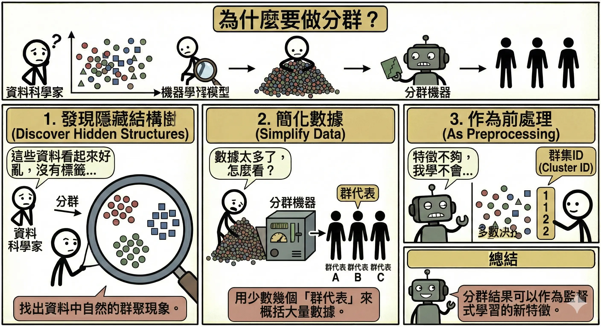
常見應用場景 (Applications)
- 客戶分群 (Customer Segmentation)：
- 根據消費行為（如 RFM 模型）將客戶分為「高價值」、「沈睡」、「新客」等群體，進行精準行銷。
- 圖像分割 (Image Segmentation)：
- 將顏色相似的像素歸為一群，用於物體識別或影像壓縮。
- 異常偵測 (Anomaly Detection)：
- 那些「不屬於任何一群」或「距離群中心很遠」的點，往往就是異常（如信用卡盜刷、產線瑕疵）。
- 文件分群 (Document Clustering)：
- 將大量新聞或文章自動歸類為「體育」、「財經」、「政治」等主題。
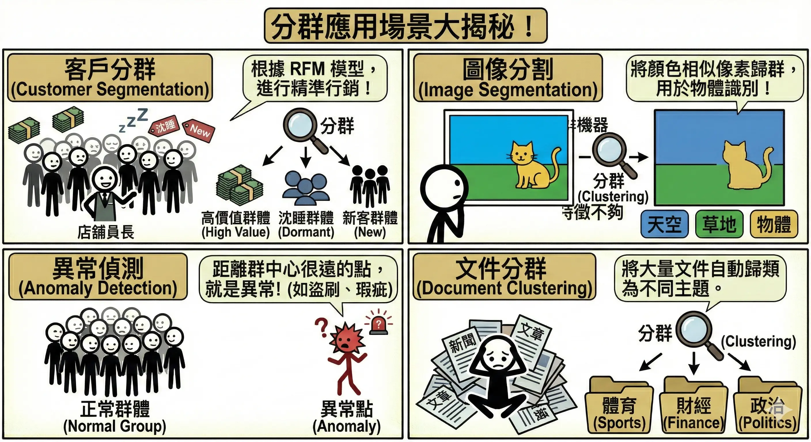
K-means 演算法
這是最簡單也最常用的分群方法。
- 運作步驟：
- 初始化：隨機選定 K 個點作為初始中心（質心）。
- 分配：將每個資料點分配給距離最近的中心。
- 更新：計算每一群的新平均位置，移動中心點到新位置。
- 重複：重複步驟 2-3，直到中心點不再移動或收斂。
- 如何決定 K 值？
- 手肘法 (Elbow Method)：畫出 K 值與誤差平方和 (SSE) 的圖。當 K 增加時，誤差會下降，但在某個點下降幅度會變緩（像手肘彎曲處），那個點通常就是最佳的 K。
- 優缺點：
- 優點：速度快，適合大數據。
- 缺點：必須事先指定 K；對離群值敏感；只能分出圓形/球形的群聚。
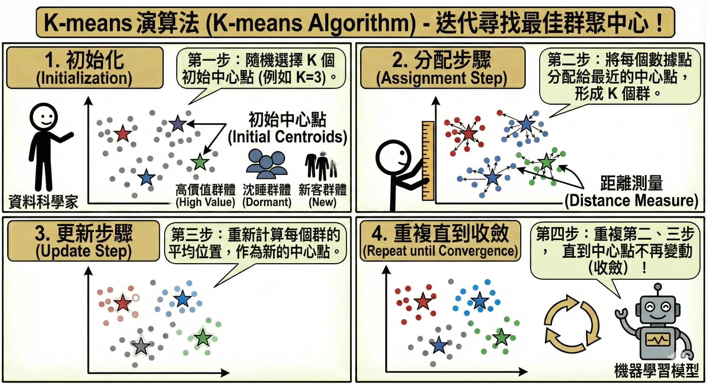
階層式分群 (Hierarchical Clustering)
- 核心概念：建立一個樹狀結構（樹狀圖 Dendrogram），不需要事先決定 K 值。
- 做法：
- 聚合式 (Agglomerative)：由下而上。一開始每個點都是一群，然後慢慢把最近的兩群合併，直到剩下一大群。
- 分裂式 (Divisive)：由上而下。一開始所有點是一大群，然後慢慢切分。
- 優缺點：
- 優點：不需要指定 K，樹狀圖能完整呈現資料的層次結構。
- 缺點：計算量大，不適合大數據。
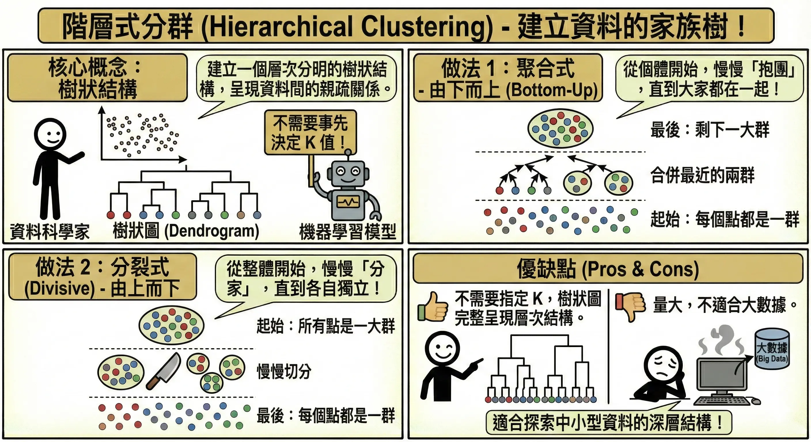
DBSCAN (Density-Based Spatial Clustering)
- 核心概念：基於密度的分群。只要點夠密集（在半徑 𝞮 內有超過 MinPts 個點）就算同一群，如果不夠密集就被視為雜訊。
- 優勢：
- 可以找出任意形狀的群聚（如彎月形、包圍形），不像 K-means 只能找圓形。
- 能自動識別並排除離群值 (Outliers)，不會硬要把雜訊歸類。
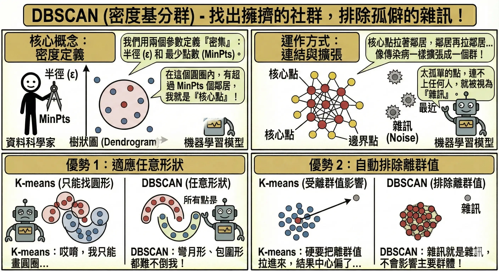
關聯規則與降維
Apriori 演算法 (購物籃分析)
經典案例：「啤酒與尿布」。沃爾瑪透過分析發現，週五晚上買尿布的爸爸，通常也會順便買啤酒。
目的 (What is this for?)：
- 找出資料庫中隱藏的關聯模式 (Pattern Discovery)。
- 回答「如果發生 X，是否通常也會發生 Y？」的問題。
- 應用：商品陳列優化（把相關商品擺一起）、推薦系統（買了這本書的人也買了…）、醫療診斷（症狀 A 通常伴隨症狀 B）。
三大指標與計算範例： 假設總共有 100 筆訂單。
- 買牛奶 (A) 的有 50 筆。 (P(A) = 0.5)
- 買麵包 (B) 的有 40 筆。 (P(B) = 0.4)
- 同時買牛奶與麵包 的有 30 筆。 P(A ∩ B) = 0.3
- 支持度 (Support)：組合出現的頻率。
- \(Support(A, B) = P(A \cap B) = \mathbf{0.3}\) (30%)
- 意義：這個組合夠不夠普遍？如果太低（如 0.001%），可能只是偶然，不值得分析。
- 信心度 (Confidence)：買了 A 的人，有多大概率也會買 B。
- \(Confidence(A \to B) = P(B|A) = \frac{0.3}{0.5} = \mathbf{0.6}\) (60%)
- 意義：關聯夠不夠強？買牛奶的人有 60% 會順便買麵包。
- 提升度 (Lift)：A 的出現是否有助於 B 的出現（比較基準是 B 的自然發生率）。
- \(Lift(A \to B) = \frac{Confidence(A \to B)}{P(B)} = \frac{0.6}{0.4} = \mathbf{1.5}\)
- 判讀：
- Lift > 1：正相關 (1.5)。買牛奶會提升買麵包的機率（提升了 1.5 倍）。
- Lift = 1：無關。
- Lift < 1：負相關。
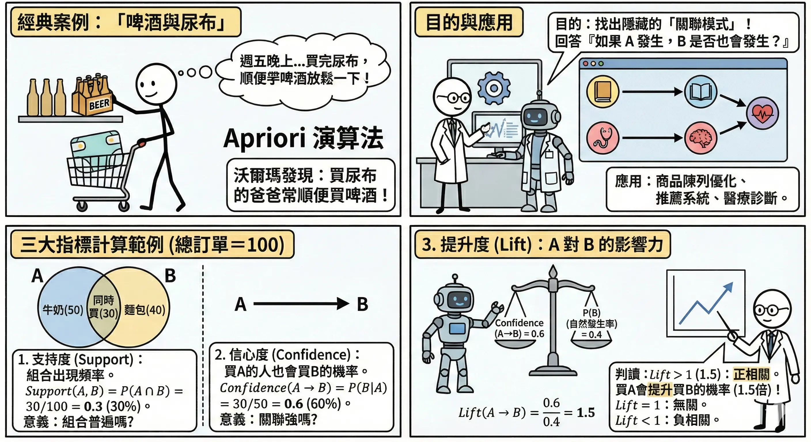
降維技術 (Dimensionality Reduction)
當特徵太多時，我們需要「降維」來簡化問題。
- 主成分分析 (PCA, Principal Component Analysis)：
- 核心概念：這是一種線性降維技術。它的目標是找到一個新的視角（投影方向），讓資料在這個方向上的變異量 (Variance) 最大。
- 類比：想像一個懸浮在空中的茶壺。
- 如果你從上方看（投影），可能只看到一個圓圈（資訊遺失多）。
- 如果你從側面看，能清楚看到壺嘴和把手（資訊保留多）。
- PCA 就是要找出這個「資訊保留最多」的最佳視角。
- 缺點：只能處理線性關係，無法展開捲曲的結構（如瑞士捲資料）。
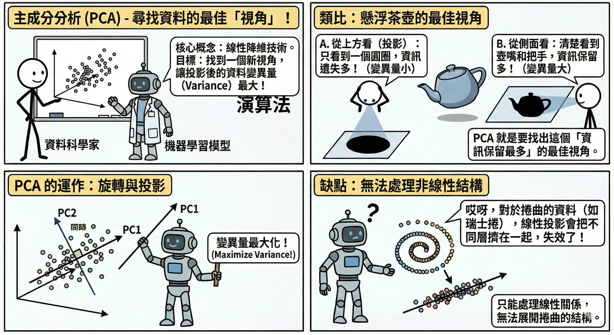
- t-SNE 與 UMAP：
- 用途：專門用於資料視覺化（將高維資料壓到 2D 或 3D）。
- 特點：非線性降維，能很好地保留資料的局部結構（相似的點在低維空間依然靠很近）。
- 自動編碼器 (Autoencoder)：
- 核心概念：一種基於神經網路的非線性降維。利用「壓縮」強迫模型學會資料的精髓。
- 架構：
- 編碼器 (Encoder)：將輸入 X 壓縮成低維度的向量 Z（稱為瓶頸層 Bottleneck）。
- 解碼器 (Decoder)：嘗試從 Z 還原回原始輸入 \(\hat{X}\)。
- 關鍵：訓練目標是讓還原誤差 \(X - \hat{X}\) 越小越好。
- 應用：
- 去噪 (Denoising)：輸入雜訊圖，要求輸出乾淨圖。AI 會學會忽略雜訊，只還原物體結構。
- 異常偵測 (Anomaly Detection)：只用「正常資料」訓練。當遇到「異常資料」時，模型會因為沒看過而無法還原，導致還原誤差極大，藉此抓出異常。
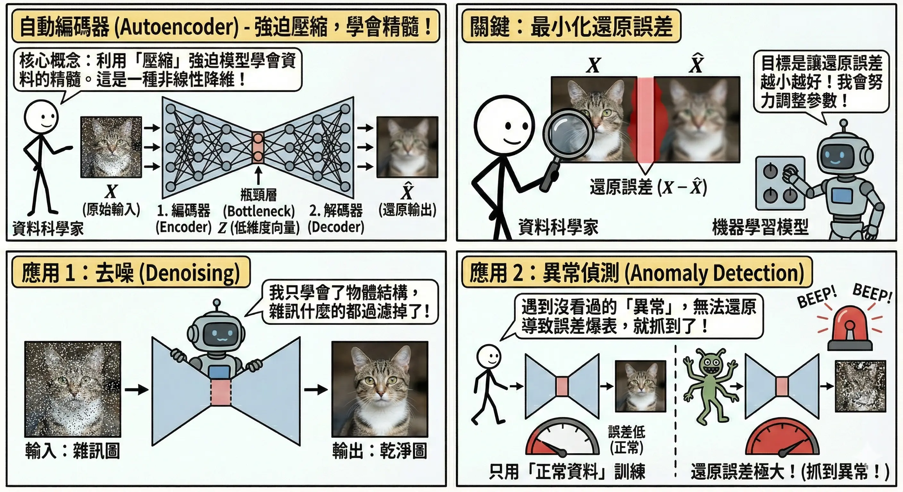
強化學習 (Reinforcement Learning)
強化學習是 AI 邁向自主決策的關鍵，目標是訓練一個 Agent 在環境中採取行動，以最大化累積獎勵。
核心要素 (RL Elements)
以「超級瑪利歐」遊戲為例：
- 代理人 (Agent)：瑪利歐（學習的主角）。
- 環境 (Environment)：遊戲關卡（充滿水管、磚塊、敵人）。
- 狀態 (State)：當前的畫面（瑪利歐的位置、敵人的位置）。
- 行動 (Action)：手把的操作（左、右、跳、發射火球）。
- 獎勵 (Reward)：環境給的回饋。
- 正獎勵：吃到金幣 (+10)、過關 (+100)。
- 負獎勵 (Penalty)：碰到烏龜 (-10)、掉進洞裡 (-100)、時間流逝 (-1)。
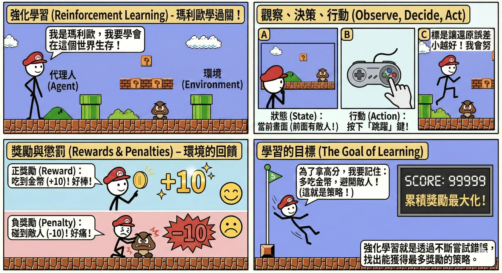
關鍵挑戰：探索與利用 (Exploration vs. Exploitation)
- 探索 (Exploration)：嘗試新的、未知的路徑。
- 目的：尋找潛在的更好策略（但也可能踩雷）。
- 利用 (Exploitation)：堅持目前已知最好的策略。
- 目的：確保獲得穩定的高分。
- 𝞮-Greedy 策略：
- 設定一個機率 𝞮（例如 10%）。
- 10% 的時間隨機亂試（探索）。
- 90% 的時間選擇目前認為最好的動作（利用）。
常見演算法
- Q-Learning (基於表格的方法)：
- 核心概念：建立一張巨大的查閱表 (Q-Table)。
- 列 (Row)：代表所有的「狀態」(State)。
- 行 (Column)：代表所有的「動作」(Action)。
- 值 (Q-Value)：代表在該狀態下，採取該動作後，預期未來能拿到的總獎勵。
- 運作：AI 查表找 Q 值最大的動作去做。做完後，根據拿到的獎勵更新表格。
- 缺點：維度災難。當狀態太多（如圍棋棋盤有 10170 種狀態，比宇宙原子還多）時，表格根本存不下，也查不完。
- 核心概念：建立一張巨大的查閱表 (Q-Table)。
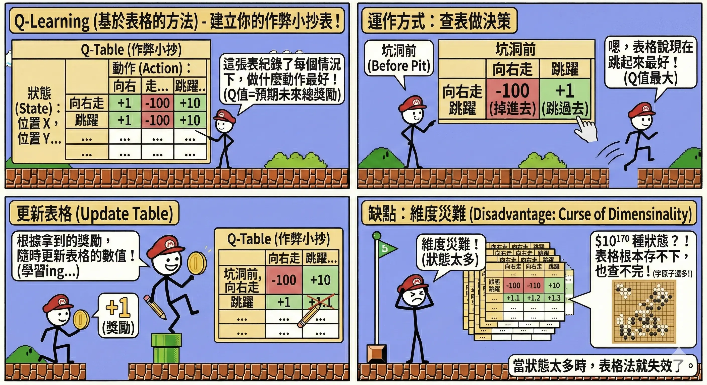
- Deep Q-Network (DQN, 深度強化學習)：
- 核心概念：結合深度學習。用一個神經網路 (Brain) 來取代 Q-Table (Cheat Sheet)。
- 運作：輸入「畫面 (State)」，神經網路直接輸出每個動作的 Q 值。
- 兩大創新 (讓訓練穩定的關鍵)：
- 經驗重播 (Experience Replay)：
- 問題：玩遊戲是連續的，前後畫面高度相關。如果 AI 只學剛發生的事，容易「鑽牛角尖」忘記以前的經驗。
- 解法：將玩過的過程存進「記憶庫」。訓練時隨機抽取片段來學習。
- 類比：就像準備考試不能只看最後一章，要隨機抽背整本書的單字卡，才能學得全面。
- 目標網路 (Target Network)：
- 問題：DQN 在更新時，目標值 (Target) 是由同一個網路算出來的。這就像「球員兼裁判」，導致目標一直變動，訓練很難收斂。
- 解法：複製一個固定不動的網路專門算目標值，每隔一段時間（如 1000 步）才更新一次。
- 類比：就像射箭練習。如果靶心一直亂動（目標變動），很難射準。Target Network 就是把靶心固定住，讓你練一陣子後，再把靶心移到新位置。
- 經驗重播 (Experience Replay)：
- 成就：DeepMind 用 DQN 讓 AI 學會玩 Atari 遊戲（如打磚塊），表現超越人類。
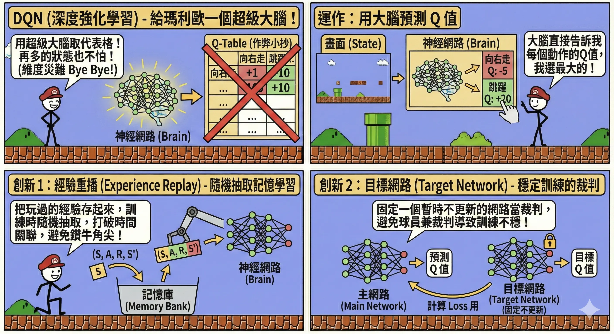
本章總結與考點提示
核心概念回顧
本章涵蓋了沒有標準答案的學習方式。
- 分群 (Clustering)：
- K-means：找圓形群聚，需指定 K。
- DBSCAN：找高密度群聚，能抗雜訊，免指定 K。
- 階層式：畫樹狀圖，層次分明。
- 關聯規則：
- Apriori：啤酒與尿布。指標：Support, Confidence, Lift。
- 降維：
- PCA：找變異最大的投影方向。
- Autoencoder：壓縮再還原。
- 強化學習 (RL)：
- 要素：Agent, Environment, Reward, Action, State.
- 核心：最大化累積獎勵。探索 vs 利用。
AI 應用規劃師認證考點
常考題型與解題策略：
- 分群演算法比較：
- 例題：「資料形狀不規則（如彎月形），且有許多雜訊，應選哪個分群法？」
- 解答：DBSCAN。K-means 做不到。
- 例題：「不知道要分幾群，想看資料的層次結構？」
- 解答：階層式分群。
- 關聯規則指標：
- 例題：「Lift > 1 代表什麼？」
- 解答：正相關（買 A 會促進買 B）。
- 例題：「Lift < 1 代表什麼？」
- 解答：負相關（買 A 的人反而不買 B）。
- 強化學習應用：
- 例題：「訓練 AI 玩瑪利歐賽車，屬於哪種學習範式？」
- 解答：強化學習。因為有明確的獎勵（名次、金幣）與懲罰（撞牆）。
記憶口訣
- K-means：「物以類聚，人以群分」（算距離）。
- DBSCAN：「人多的地方不要去」（算密度）。
- Apriori：「啤酒尿布」（關聯）。
- RL：「糖果與鞭子」（獎勵與懲罰）。
延伸思考
- 為什麼 K-means 對離群值很敏感？（因為平均數會被拉走，導致中心點偏移）。